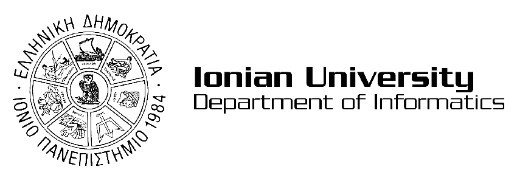

Nikolaos Roufas

nikolaosroufas@gmail.com inf2024146@ionio.gr
Curriculum Vitae
Google Scholar
GitHub
LinkedIn
I’m an undergraduate Computer Science student at the Ionian University, Department of Informatics, conducting research in Neural Networks and Machine Learning, with a growing interest in their applications to Natural Language Processing (NLP) and Explainable AI (XAI). As part of the Erasmus+ program, I’m currently carrying out research at Sapienza University of Rome, further expanding my work in machine learning and neural architectures.
My research is driven by a central question: How can we build intelligent systems that are both powerful and interpretable? I explore how neural architectures can be designed and trained to achieve high performance while remaining transparent and modular.
To address these questions, I work with state-of-the-art neural and transformer-based models, semantic retrieval pipelines, and methods for explaining model behavior. My projects involve discourse and sentiment analysis, structured knowledge extraction from large-scale text, and techniques for improving interpretability through visualization and modular AI design.
I have co-authored peer-reviewed research presented at international conferences such as AIAI 2025, becoming one of the youngest researchers in Greece to do so. My current work focuses on neural networks, explainable transformer architectures, and scientific document understanding. Looking ahead, I aim to pursue a Ph.D. in AI/ML—potentially at institutions like ETH Zurich—and contribute to the development of transparent, modular AI systems that advance the field both theoretically and practically.
Research


My research centers on Neural Networks and Machine Learning, with applications in explainable AI, natural language processing, and domain-specific tasks such as climate discourse analysis, scientific text processing, and legal document understanding. I aim to design modular and interpretable AI systems that combine state-of-the-art performance with transparency, contributing to responsible and trustworthy AI development.

I) Explainable NLP for Social Discourse
- "Analyzing Public Discourse and Sentiment in Climate Change Discussions" (AIAI 2025) — introduced a transformer-based pipeline for large-scale social text mining, enabling sentiment and semantic structure extraction from multilingual climate-related discourse.
II) Legal AI and Text Anonymization
- "LegNER: A Domain-Adapted Transformer for Legal Named Entity Recognition and Text Anonymization" (Frontiers in AI, 2025) — developed a domain-specific BERT-based model that achieved near-perfect precision and recall in legal NER, enabling GDPR-compliant text anonymization and advancing research in Legal NLP.
Ongoing work focuses on explainable legal AI systems, leveraging attention mechanisms, visualization techniques, and human-in-the-loop feedback to make high-stakes AI decisions in law and policy more transparent, auditable, and trustworthy.
Papers
Analyzing Public Discourse and Sentiment in Climate Change Discussions Using Transformer-Based Models
N Roufas, A Mohasseb, I Karamitsos & A Kanavos*
IFIP AIAI 2025 |
paper
LegNER: A Domain-Adapted Transformer for Legal Named Entity Recognition and Text Anonymization
N Roufas, A Mohasseb, I Karamitsos & A Kanavos*
Frontiers in Artificial Intelligence, 2025 |
Not available
Efficient Protein
Folding with Transformer Models Using the Performer Architecture.
Roufas, N., Karamitsos, I., Al-Hussaeni, K., Gerogiannis, V. C., & Kanavos, A.*
ICTA 2025 |
Not available
Last Update: October 2025